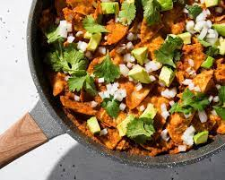

About Author

Hello there! I'm a travel enthusiast and a foodie at heart, always on the lookout for exciting adventures and mouthwatering meals. Join me on my journey as I explore the world, one delectable dish at a time. With my camera in hand, I capture the vibrant colors, enticing aromas, and exquisite flavors of the places I visit. From savoring street food delights in bustling markets to indulging in fine dining experiences, I'll take you on a sensory voyage like no other. Let me be your guide as we embark on a shared culinary and travel adventure, where each photo I share is a story waiting to be told.
Thailand

China
Mexico
South Africa